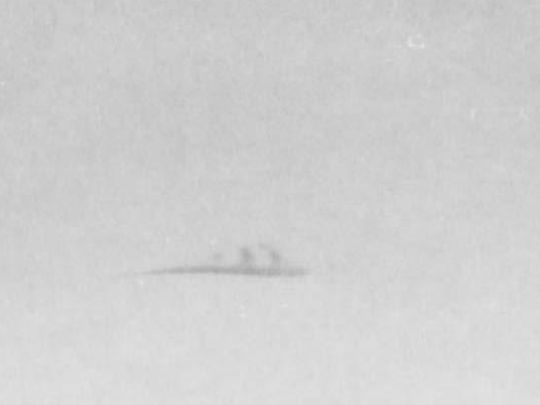
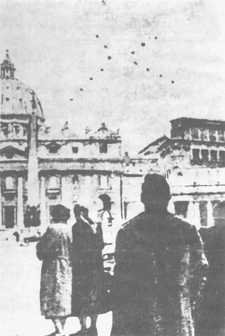
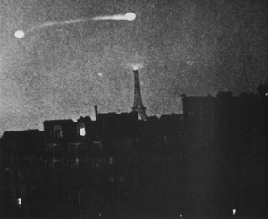

L'USAF annonce à Washington qu'elle a mis en place des
appareils photographiques dans tout le pays, équipés de grilles de diffraction pour analyser la nature des sources
de lumière de type ovni "The 1953 UFO
Chronology", NICAP.
Près de Gambell (Alaska), sur l'île
Saint-Laurent, un sergent de la Garde nationale de l'Alaska résidant sur l'île voit pendant environ 5 minutes une
lumière stationnaire à l'horizon à l'ouest de Gambell (cap vrai 283°), de la couleur d'une lampe torche, qui
disparaît comme si on l'éteignait. L'officier qui rédige le rapport évoque un navire non identifié, sans pouvoir
conclure DOW-UAP-D162, Air Intelligence Information Report, Alaska, 1953, PURSUE n° 7, .
Thunderjet de la Garde Nationale Aérienne de Georgie s'abattent en flamme
d'environ 3500 m d'altitude, tous ensemble. Le temps était orageux, mais juste avant l'écrasement des 4 appareils,
un des pilotes disait : Nous ne pouvons le manquer !
A Sherbrook (Nouvelle-Ecosse, Canada), Mme Orfei entend
frapper à la porte au milieu de la nuit et personne ne répond lorsqu'elle demande l'identité du visiteur. Lorsqu'on
entend frapper encore plus fort, son chien alsacien saute vers la porte, mais recule tout à coup, tremblant de peur,
et se réfugie dans un coin. Mme Orfei monte à l'étage et voit 2 indescriptibles
qui s'éloignent de la maison. Un peu plus tard un grand objet rond décolle à une centaine de mètres en émettant des
éclairs bleu-vert. La police constatera que des arbustes ont été brisés et qu'un objet d'un très grand poids s'est
posé Oltre il Cielo, vol. I.
Le commandement interarmées américain diffuse la JANAP
146.
Près de Seymour (Indiana), 2 journalistes
circulant en voiture observent une « lumière brillante en mouvement » et 2 grands objets blancs, nuageux ou gazeux,
en formation décalée, chacun avec 4 points brillants et une traînée bleu-blanc semblable à de la vapeur. Les objets
approchent en ligne en descendant, restent stationnaires, puis repartent brusquement vers le haut et le sud-ouest.
L'observation directe dure 3 à 4 minutes, sur 5 à 6 minutes au total. Le rapport, établi selon l'AFR 200-2, ne donne pas la date exacte ; son analyse météo couvre
cette période DOW-UAP-D164, Flying Object Report, Indiana, 1953, PURSUE n° 7, .

Le "nuage" photographié à Redlands
À Redlands, un homme (26 ans) dit avoir découvert un ovni sur un cliché qu'il développait
d'une photo de concession automobile. La photo qui montre un phénomène sombre allongé avec 3 sallies verticales dans
le ciel au-dessus de la concession, est soumise au projet Blue Book, qui conclut à un nuage "Project
10073 Card", Black Vault.
Dans le nord du Maroc français et en
Méditerranée, le détachement 2 du 737ᵉ escadron AC&W de l'USAF,
unité radar basée à Saïdia (Maroc), détecte un écho inconnu dont la forme varie entre
« V », « W » et « M », et qui s'estompe au bout de plusieurs minutes. Les électroniciens de la 316ᵉ division
aérienne y voient une propagation anormale, un brouillage par le radar d'un navire ou des oies ou cigognes en vol,
l'une de ces hypothèses étant jugée la plus probable
DOW-UAP-D160, Air Intelligence Information Report, Morocco, 1953, PURSUE n° 7, .

Escadrille d'ovnis survolant le Vatican sur la place de San Pedro. Simple dessin sur une photo ?
Près de Hässleholm (Suède), le chef pilote de Transair
Ulf Christiernsson et le chef mécanicien Olle Johansson,
à bord d'un DC-3 volant vers 2 150 m, voient venir en sens inverse, environ 600 m plus bas, un objet métallique brillant, sphérique et elliptique dont ils estiment la vitesse proche de celle du son. Presque rond, légèrement
elliptique et d'aspect fortement métallique, il reste visible 6 à 7 secondes, sans échappement ni traînée de
condensation ; le pilote pense d'abord à un jet ou à un « robot » sans pilote. L'état-major suédois ne trouve
aucun appareil suédois dans la zone, annonce examiner d'éventuelles détections radar et ouvre une enquête. Le
rapport (AIIR), traduit de la presse locale, comporte aussi un portrait du pilote par une connaissance qui le juge
des moins dignes de confianceCas Blue Book n° 2838 non résoluDOW-UAP-D163, Air Intelligence Information Report, Sweden, 1953, PURSUE n° 7, .
René Coty est élu président de la République.
À El Cajon (Californie), les lieutenants de l'U.S. Navy
J. B. Howard et L. D. Linhard, pilotant des chasseurs
F9F-2, observent durant 10 objets ovales et argentés voler à plus de 400 noeuds (450
miles/h) de manière rectiligne Cas Blue Book n° 2840 non résolu.
Ovnis du Vatican (Rome, Italie), "escadrille d'ovnis" survolant
le Vatican sur la place de San Pedro.
A Marysville (Californie), Dick
Brandt (directeur de l'aéroport du comté de Yuba), observe durant une
soucoupe avec une lumière blue brillant, se reflétant sur un bâtiment voisin, rester stationnaire Cas Blue Book n° 2844 non résolu.

La photographie du 29 à Paris
A Paris (France), Paul Paulin photographie sur un temps d'exposition de 2 mn montrant un phénomène décrit
comme immobile puis "sautant" sur le côté pour redevenir immobile, entre la Tour Eiffel et le Parc des
Expositions Guieu, Jimmy..
Sur Radio Moscou : Les soucoupes volantes sont des engins mythiques qui décollent des pages de la presse
bourgeoise chaque fois que les milieux dirigeants de tel ou tel pays capitaliste, sur l'ordre de Washington,
essaient de faire accepter par le peuple le nouveau fardeau des dépenses militaires.
A la base Marine de Quantico (Virginie), des Marines observent
l'atterrissage d'un objet rond inconnu qui émet des lumières rouges Wilkins, Harold T.: U. 210.